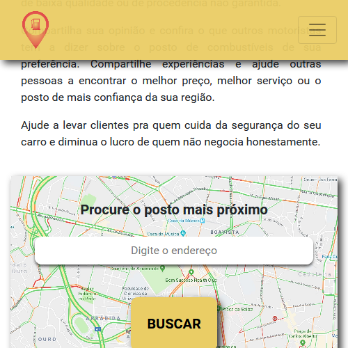
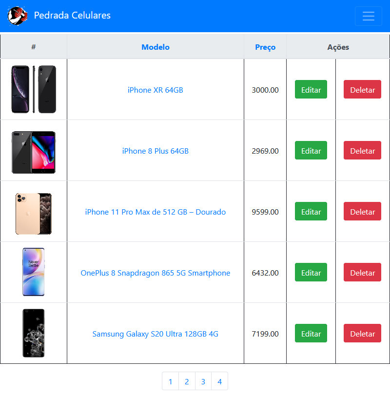
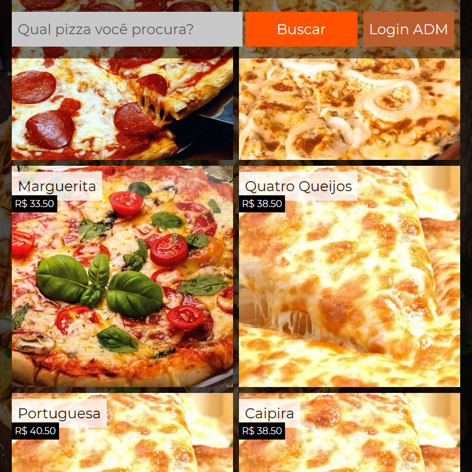
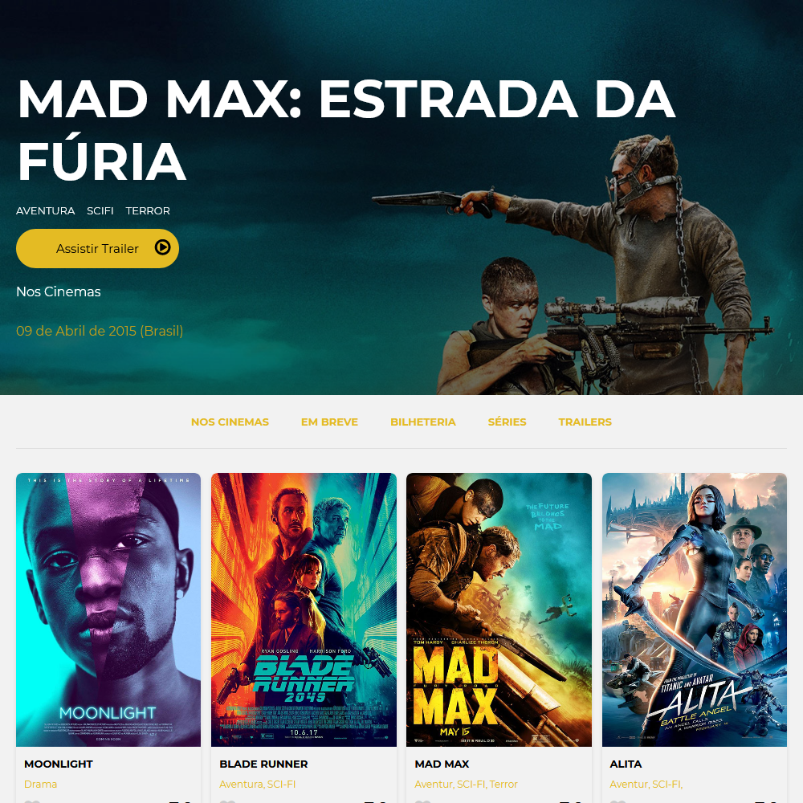
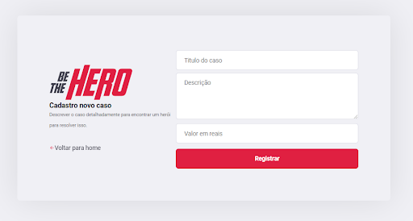

Sobre Mim Me formei inicialmente em Hidráulica e Saneamento Ambiental pela Fatec-SP em 2018. Já no 3º semestre do curso, consegui uma bolsa pelo Ciência sem Fronteiras na modalidade Graduação Sanduiche para realizar 3 meses de curso intensivo em inglês na Rutgers University e 2 períodos de Engenharia Ambiental na Marquette Univeristy. Voltei em 2015 com muitas experiências, conhecimentos adquiridos e inglês fluente, contudo, o setor de construção cívil estava em cenário de crise. Após alguns meses sem sucesso procurando vagas no setor, necessitava tentar outros horizontes. Portando, decidir tomar vantagem do inglês fluente e passei a dar aulas de inglês em escolas do bairro como FISK e CCAA. Após um ano, em dezembro de 2016, um amigo da família me convidou a tentar um vaga em uma empresa multinacional de tecnologia chamada Tangoe. Após me destacar no processo seletivo, consegui a vaga principal para atuar como o primeiro Account Specialist no Brasil. Em 2018, após a gradução e ainda sem voltar para minha incial área de estudo, tinha que decidir entre continuar investindo nessa área ou mudar completamente e ir para a tecnologia. Então, na metade de 2019, ainda sem coragem de fazer a migração de área, iniciei graduação em Engenharia Civil. No mesmo período, realizei cursos de lógica de programação e javascript no Senac. No fim de 2019, um colega do Senac me enviou o processo seletivo para bolsa na Digital House oferecido pelo Santander Coders. Após muita ansiedade e dedicação, consegui a bolsa, o que foi um divisor de águas em minha vida profissional. Finalmente, consegui visualizar todo um ciclo de vida de uma aplicação e de cara me apaixonei por programar, ver projetos tomando forma e ideias saindo do papel. Isso me fez tomar coragem para dar o primeiro passo na migração de carreira. Mudei para o curso de Análise e Desenvolvimento de Sistemas e estou investindo incontáveis horas em estudos e cursos. O caminho ainda é longo pela frente, mas o fato de ter um sonho mais claro, facilita a visualização do mesmo e o torna mais excitante. Veja abaixo as linguagens que venho aprendendo e projetos recentes.
 App Meu Posto  CRUD Celulares App Corona  Site Pizzaria  IMDB Clone  Semana Omnistack 11